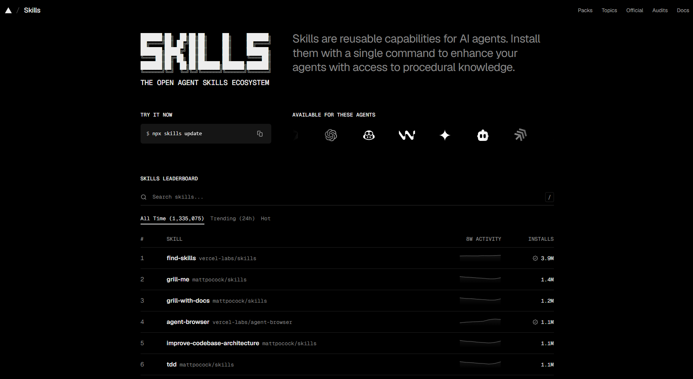

Capítulo 04
Programar con IA
(vibe coding)
Cómo pedir, qué contexto dar y qué revisar.
Objetivo: una tabla con los 10 mejores puntajes.
Contexto: la ABI en src/contract/leaderboard.abi.json.
Restricciones: no cambies el contrato.
Comprobación: 900, 300, 40, 15
Claude Code~/mi-juego
Agrega el ranking de los 10 mejores.
Edito Ranking.ts:
const top = scores
.sort((a, b) => b - a)
.slice(0, 10);
Qué es vibe coding
Describes lo que quieres en lenguaje natural. El agente escribe, edita y corre el código. Tú revisas, pruebas y decides qué se queda.
A manoescribes tú
Con IAdescribes y revisas
Tú eres responsable de lo que se publica. En la cadena no hay vuelta atrás.
01
Describestú02
Generael agente03
Revisasel diff04
Pruebasen Desktop05
Commitsi funciona↻ otra vuelta
Un ejemplo
Claude Code~/mi-juego
Agrega un botón «Guardar récord» que llame submitScore del contrato Leaderboard. Simula con .query() antes de pedir la firma.
Leo src/contract/leaderboard.abi.json
Edito src/components/FinDePartida.ts
Corro pnpm build ✔
Listo. Cambié 1 archivo; pruébalo con pnpm dev.
Tú revisas
git diff: solo los archivos que modificó
Pruebas manualesabre la app y prueba el flujo a mano
Pruebas automatizadaslos tests pasan (pnpm test)
Anatomía de un prompt
Objetivo
Muestra una tabla con los 10 mejores puntajes del contrato Leaderboard.
Contexto
La ABI está en src/contract/leaderboard.abi.json.
Usa getScores(offset, limit) para leer a los jugadores.
Restricciones
No cambies el contrato ni package.json. Usa solo funciones de esa ABI.
Formato
Crea src/components/Ranking.ts y dime qué otros archivos tocaste.
Comprobación
Con puntajes 40, 900, 15 y 300, la tabla muestra 900, 300, 40, 15.
Si falta una parte, la IA la rellena adivinando.
Prompt malo vs bueno
Malo
Bueno
✘ Haz un leaderboard.
→
Lee con getScores de la ABI y simula con .query() antes de .tx().
✘ Arregla el error.
→
Pega el error completo, di cuándo pasa y pide la causa antes del código.
✘ Hazlo bonito.
→
gap de 16 px entre las cards y botón disabled al firmar.
Qué cambió: contexto concreto, el error textual y el nombre de lo que se ve.
Pide con nombres
Las partes de una interfaz tienen nombre, casi siempre en inglés.
tu-app.dot
card
padding
gap
ana900
0x3f…a1300
Guardar récord
disabled
✔ Récord guardado
toast
paddingDale 12 px de padding al botón.
gapgap de 16 px entre las cards.
cardMuestra cada jugador en una card.
toastUn toast al guardar el puntaje.
disabledBotón disabled mientras se firma.
La lista completa: recursos/vocabulario-de-interfaz.md
Specs
SPEC.md
# Spec: guardar el récord al terminar
## Objetivo
## Qué hace
## Qué no hace
## Datos y contrato
## Pantallas y estados
## Casos de prueba
## Fuera de alcance
Antes de pedir códigodecides qué hace y qué no
Una sola fuente de verdadpégala o guárdala como SPEC.md
Kiro · modo Specrequirements.md · design.md · tasks.md
Pídeselo así: «Lee SPEC.md y propón las tareas en orden. No escribas código todavía.»
¿Prompt o spec?
Lo chico va en el chat; lo grande, en un archivo.
Prompt · cambios pequeños
Claude Code~/mi-juego
Mueve el botón Guardar abajo.
Listo · 1 archivo
Cambia el color del HUD.
Listo · 1 archivo
Arregla este error: <texto exacto>
Corregido · 1 archivo
Spec · decisiones grandes
spec-fantasmas.md
✔ varias pantallas
✔ reglas con números
✔ lógica con muchos casos
✔ varias sesiones de trabajo
# el agente relee el archivo cada vez
Entrevista → spec-<tema>.md → la revisas → púlela con la skill → commit
Casos de prueba
DadoCuandoEntonces
Sin puntaje
→
Envía 120
→
Récord 120
Récord 300
→
Envía 300
→
ScoreNotHigher
Otra cuenta tiene «ana»
→
Pides «ana»
→
Ya está tomado · UsernameTaken, sin firma; conserva lo escrito
Navegador normal
→
Carga
→
Aviso · isInsideContainer()
Terminal
cd contrato
pnpm test
Pon los casos en el prompt. Si uno deja de cumplirse, lo ves enseguida.
Pasos chicos y commits
Un cambio por prompt. Funciona → commit.
Prompt 1commit · ranking
Prompt 2commit · toast
Prompt 3algo se rompió
↩ Vuelvesal último commit bueno
Terminal
git status # qué archivos cambiaron
git diff # línea por línea
git add src/components/Ranking.ts
git diff --staged # lo que entra al commit
git commit -m "Agrega ranking"
Contexto
La IA solo sabe lo que le das. Lo que falta, lo inventa.
Agrega el ranking.
leaderboard.abi.json · 0x…
devnet_asset_hub · 420420417
llms.txt · docs.polkadot.com
error-completo.txt
captura.png
src/components/Ranking.ts
Nunca
Tu frase de recuperación
Llaves privadas
.env con secretos
Tu frase es tu cuenta. La llave privada firma por ti.
Ventana de contexto
← se resume o se pierdelo más nuevo →
archivos que leyó
la conversación
sus respuestas
Decisiones grandes → archivo spec · tema nuevo → chat nuevo
Agentes
Un chat te responde. Un agente trabaja en tu proyecto.
Un chat
Chat
¿Cómo agrego un botón «Guardar récord»?
Pega esto en FinDePartida.ts:
boton.onclick = guardar;
boton.onclick = guardar;
tú copias, pegas y corres
Supervisado
apruebas cada cambio
Autónomo
trabaja solo, revisas el resultado
Un agente
01
Leer↓
02
Planear↓
03
Editar↓
04
Ejecutar↓
05
Revisar↺ repite hasta terminar
Kiro · Claude Code · Cursor · GitHub Copilot · Codex · Gemini CLI
AGENTS.md
AGENTS.md
raíz del repo · cambia con git
→
Kiro
Claude Code
Cursor
GitHub Copilot
Codex
Gemini CLI
Mismas reglas en cualquier herramienta. El steering de Kiro sirve solo en Kiro.
AGENTS.md
## Red
- Solo Products Devnet: Asset Hub 1000, chainId 420420417.
- Descriptor: devnet_asset_hub, desde …
## Versiones
- Exactas, sin ^ ni ~. No actualizar ninguna sin que yo lo pida.
- @parity/product-sdk 0.27.0
## Gestor de paquetes
- Nunca npm ni yarn.
## Secretos
- Nunca pedir, leer, escribir ni mostrar frases de recuperación,
llaves privadas o archivos .env.
Pídeselo así: «Lee AGENTS.md y dime qué reglas vas a seguir antes de empezar.»
Qué es una skill
polkadot-products-devnet/
polkadot-products-devnet/
├── SKILL.md obligatorio
├── references/ opcional · documentos
│ ├── red-devnet.md
│ ├── versiones.md
│ ├── contratos.md
│ ├── app-sdk.md
│ ├── publicar.md
│ ├── errores-comunes.md
│ └── fuentes.md
└── scripts/ opcional · programas
└── verificar-entorno.mjs
SKILL.md
---
name: polkadot-products-devnet
description: Guía para crear, conectar y publicar Polkadot Products en Products Devnet… Usar cuando el usuario pregunte por…
lo único que lee al iniciar
---
# Polkadot Products en Products Devnet
## Cuándo usarla
## Cómo responder
## Reglas obligatorias
## Índice de referencias
…instrucciones…
Formato abierto: Agent Skills · agentskills.io/specification
Cómo la usa el agente
Carga solo lo que necesita, en este orden.
01
Al iniciarlee name + description de cada skill instalada (~100 tokens)→
02
Tu pedido coincidecon la description: carga el SKILL.md completo→
03
Le hace falta un datoabre solo ese archivo de references/ (p. ej. versiones.md)→
04
Corre un scriptscripts/verificar-entorno.mjs con los permisos del agente: por eso los leesDónde vive
.agents/skills/polkadot-products-devnet/copia canónica
→
.kiro/skills/enlace
.claude/skills/enlace
uno por agente
+
skills-lock.jsonen la raíz: qué se instaló
MCP vs skills
MCP conecta al agente con herramientas y datos externos.
Skill
Archivos de instrucciones
Lo lee si tu pedido coincide
Agrega conocimiento y reglas
← leellama →
AGENTE
Kiro, Claude Code, Cursor…
Servidor MCP
Un programa con herramientas
Llama sus herramientas
Agrega acciones y datos externos
Para este hackatón no necesitas ningún servidor MCP.
skills.sh
www.skills.sh

https://www.skills.sh
El sitio de las skills
01Buscar
Busca y encuentra skills; el ranking cuenta instalaciones.
02Verificar
Cada skill muestra su SKILL.md, sus archivos, sus instalaciones y 3 auditorías automáticas: Gen Agent Trust Hub, Socket y Snyk.
No es una revisión humana.
03Instalar
Copia el comando que muestra. Aquí usa los de este capítulo: fijan skills@1.7.2.
Léela antes de instalarla
Una skill le da instrucciones a tu agente. Ábrela en GitHub y revisa:
Quién la publica
Secretos
Qué archivos trae
Lo que fuerza
El SKILL.md completo
Texto que manda al agente
curl, npx, rm -rf, -g
Fecha del último cambio
Reglas remotas
Instala las skills
Desde la raíz de tu proyecto.
Raíz de tu proyecto
npx skills@1.7.2 add https://github.com/BrandonFilth/polkadot-products-devnet --skill polkadot-products-devnet
npx skills@1.7.2 add https://github.com/anthropics/skills --skill frontend-design
npx skills@1.7.2 add https://github.com/addyosmani/web-quality-skills --skill accessibility
npx skills@1.7.2 add https://github.com/OpenZeppelin/openzeppelin-skills --skill develop-secure-contracts
npx skills@1.7.2 add https://github.com/addyosmani/agent-skills --skill security-and-hardening
# Opcional: revisión de contratos
npx skills@1.7.2 add https://github.com/wshobson/agents --skill solidity-security
Menú de la CLI
◇ Which agents do you want to install to? › tus agentes
◇ Installation scope › Project
◇ Installation method › Symlink (Recommended)
◇ Proceed with installation? › revisa y confirma
Cómo supervisar a la IA
git diff --stat
✔src/boton-guardar.ts+12 −3pedido
✔src/estado.ts+8pedido
✘package.json+1 −1no lo pedistecambió una versión
✘src/estilos.css+240 −238no lo pedistereformateó todo el archivo
✘test/guardar.test.ts−30no lo pedisteborró tests
pnpm test
✔ test/boton-guardar.test.ts (5)
✔ test/estado.test.ts (4)
✔ test/guardar.test.ts (3)
Tests 12 passed
en verde no basta si borró tests: míralo en el diff
01Antes
Tarea clara y acotada. Pide un plan antes de que toque archivos.
02Durante
Pasos chicos. Si se desvía, detenlo y corrige el rumbo.
03Después
Corriste los tests: en verde, ninguno borrado
git diff solo con lo pedido
Sin dependencias ni versiones nuevas
Ningún secreto en el diff
El build pasa
Entiendes cada cambio
Commit por paso: puedes volver atrás
Errores comunes en este stack
Inventa funciones
Solo la ABI y la skill; si no, «no verificado»
Usa otra red
chainId 420420417 · devnet_asset_hub
Actualiza las versiones
No cambies package.json
Usa npm o yarn
Solo pnpm
Conecta con getChainAPI()
createChainClient + devnet_asset_hub
.tx() sin .query()
Simula primero y muestra el error